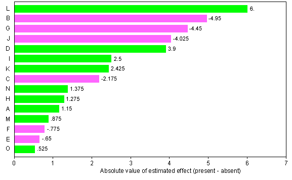

Resolution
When more than four additional factors are added to a complete 24 factorial design, it is impossible to avoid confounding main effects with 2-factor interactions. The resulting design is therefore a resolution III design. The levels of the additional factors can be defined from any of the interactions between A, B, C and D.
Screening
As with other resolution III designs, it must be assumed that there are no 2-factor interactions or that these are negligible compared to the main effects. Otherwise it is possible that a 2-factor interaction between two factors A and B may show up as an apparently large main effect for a completely different factor such as E.
Resolution III designs are mainly used for screening purposes — to rank a large number of factors in order of 'importance' so that a smaller number can be examined in more detail in later experiments.
Testing
If fewer than 15 factors are used in the 16 runs, there will be some degrees of freedom that could potentially be used for a residual sum of squares to estimate experimental variability. This would allow some testing of main effects. However these tests require the assumption that there are no interactions between the factors, so it is recommended that some extra runs be conducted at the centre point of the design to estimate experimental variability if hypothesis tests will be required.
Arometization study
At the start of this chapter, we described an experiment that was conducted to find the most important of 15 aromatization molecules (A to O) for the percentage of wet cat food consumed.
This experiment was a 215-11 fractional factorial design with the levels of factors E to O defined from all interactions between A, B, C and D in a complete 24 design for these four factors.
The response, Y, was the percentage of the arometized food consumed.
| Aromization molecule | Percent consumed | |||||||||||||||
|---|---|---|---|---|---|---|---|---|---|---|---|---|---|---|---|---|
| E | F | G | H | I | J | K | L | M | N | O | ||||||
| Run | A | B | C | D | AB | AC | AD | BC | BD | CD | ABC | ABD | ACD | BCD | ABCD | Y |
| 1 | +1 | +1 | +1 | +1 | +1 | +1 | +1 | +1 | +1 | +1 | +1 | +1 | +1 | +1 | +1 | 63.3 |
| 2 | +1 | +1 | +1 | -1 | +1 | +1 | -1 | +1 | -1 | -1 | +1 | -1 | -1 | -1 | -1 | 56.6 |
| 3 | +1 | +1 | -1 | +1 | +1 | -1 | +1 | -1 | +1 | -1 | -1 | +1 | -1 | -1 | -1 | 63.8 |
| 4 | +1 | +1 | -1 | -1 | +1 | -1 | -1 | -1 | -1 | +1 | -1 | -1 | +1 | +1 | +1 | 54.6 |
| 5 | +1 | -1 | +1 | +1 | -1 | +1 | +1 | -1 | -1 | +1 | -1 | -1 | +1 | -1 | -1 | 54.8 |
| 6 | +1 | -1 | +1 | -1 | -1 | +1 | -1 | -1 | +1 | -1 | -1 | +1 | -1 | +1 | +1 | 68.9 |
| 7 | +1 | -1 | -1 | +1 | -1 | -1 | +1 | +1 | -1 | -1 | +1 | -1 | -1 | +1 | +1 | 66.5 |
| 8 | +1 | -1 | -1 | -1 | -1 | -1 | -1 | +1 | +1 | +1 | +1 | +1 | +1 | -1 | -1 | 70.5 |
| 9 | -1 | +1 | +1 | +1 | -1 | -1 | -1 | +1 | +1 | +1 | -1 | -1 | -1 | +1 | -1 | 58.2 |
| 10 | -1 | +1 | +1 | -1 | -1 | -1 | +1 | +1 | -1 | -1 | -1 | +1 | +1 | -1 | +1 | 57.4 |
| 11 | -1 | +1 | -1 | +1 | -1 | +1 | -1 | -1 | +1 | -1 | +1 | -1 | +1 | -1 | +1 | 64.8 |
| 12 | -1 | +1 | -1 | -1 | -1 | +1 | +1 | -1 | -1 | +1 | +1 | +1 | -1 | +1 | -1 | 55.9 |
| 13 | -1 | -1 | +1 | +1 | +1 | -1 | -1 | -1 | -1 | +1 | +1 | +1 | -1 | -1 | +1 | 66.3 |
| 14 | -1 | -1 | +1 | -1 | +1 | -1 | +1 | -1 | +1 | -1 | +1 | -1 | +1 | +1 | -1 | 60.2 |
| 15 | -1 | -1 | -1 | +1 | +1 | +1 | -1 | +1 | -1 | -1 | -1 | +1 | +1 | +1 | -1 | 72.3 |
| 16 | -1 | -1 | -1 | -1 | +1 | +1 | +1 | +1 | +1 | +1 | -1 | -1 | -1 | -1 | +1 | 54.7 |
The estimated main effect of each factor is the difference between the mean percentages of cat food consumed with and without the corresponding aromatization molecule. The diagram below displays their absolute values graphically.

It is impossible to assess the significance of these main effects since there are no residual degrees of freedom (15 main effects are estimated from 16 runs of the experiment). Even the largest main effect (for molecule L) could therefore possibly be simply a result of experimental variability.
However the aromatization molecules that seem to have the greatest potential positive effect on the percentage of cat food consumed are L, D, I and K. A further experiment might be conducted to further examine (and test) the effects of these factors.